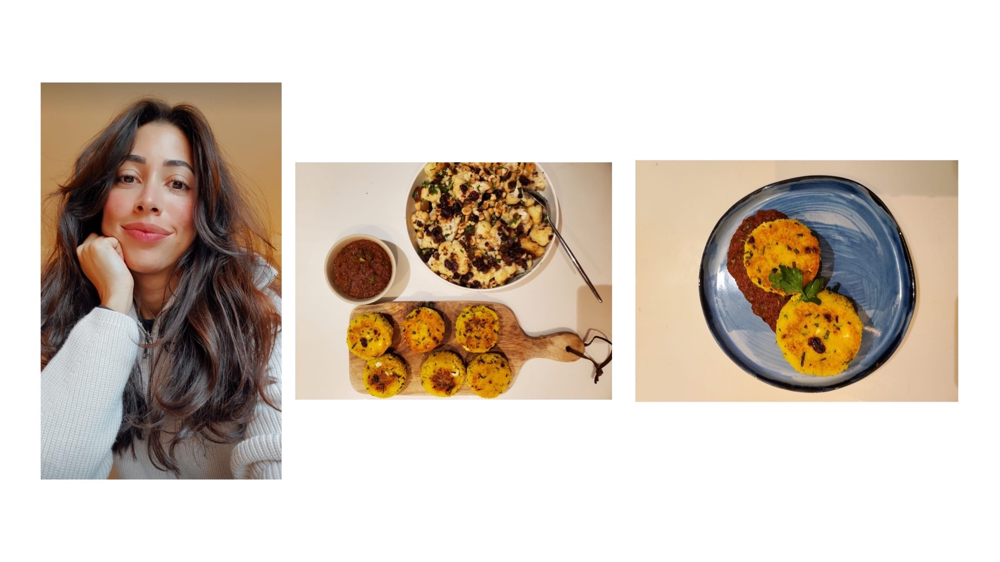
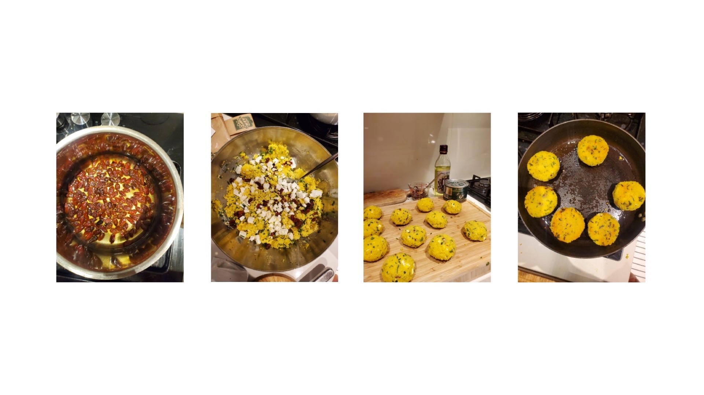

Me dá couscous?
Sabrina é a pessoa com o maior bom gosto que conheço. Ela é linda, legal demais e sempre foi uma referência pra mim, talvez por ser muito talentosa nas artes e na culinária além de outros campos. Hoje faz uma participação com a primeira receita do blog, que ela adaptou de uma criação do Ottolenghi (muito chique, nem conhecia kkkk). O nome é “bolinho de couscous??” ela disse, pensativa.
Foto: A criadora e a criatura. Sabrina mora em Dubai há 7 anos e na minha cabeça ela já conheceu o mundo todo
Ingredientes:
- 250g de couscous marroquino - 30g de goji berries - 140g de iogurte grego - 2 ovos - 20g de cebolinha verde (sem a parte branca) - 100g de feta - ghee ou manteiga misturada com óleo pra fritar
Modo de preparo guiado pela chef:
Hidratar o couscous com 450 ml de água fervente, gosto de colocar um pouco de sal e uma pontinha de manteiga na água do couscous. Deixa hidratar por 15 min. As goji berries a gente coloca em uma panela com 120 ml de àgua e 50g de açucar, deixa hidratar por 10 min, quando a água esfriar retira as berries! Adiciona o iogurte, os ovos, a cebolinha picada e o queijo feta cortado em quadradinhos de 1cm e as berries ao couscous. Logo fazemos bolinhos da mistura de couscous com as mãos. Temos que fazer bolinhos bastante compactos para que não se desfaçam na hora de fritar. Essa receita normalmente dá pra 12 bolinhos. Então colocamos 2 colheres de ghee em uma frigideira e colocamos 4 bolinhos por vez, cada lado demora 2 minutos até ficar douradinho.
Foto: Processo de preparo fotografado por Sabrina
Sabrina normalmente serve a receita com um chutney de tomate (pode ser comprado pronto) e uma salada.
Se quiser fazer o chutney em casa a receita é bastante simples.
Assar por 40 min em fogo médio 5 tomates cortados em 4 cobertos com uma mistura de 3 colheres de sopa de azeite, 1 de açúcar, sal e pimenta em flocos. Logo tostar levemente 1colher de sopa de sementes de cominho e 1 colher de sementes de erva doçe. Colocar os tomates assados e temperos em um processador e pulsar, deixando alguns pedaços de tomate inteiros, levar para o fogo, adicionar água, açucar e sal a gosto, deixar ferver por ao menos 15 min. Voilá!
Sim, ela é uma deusa na cozinha! Se fizerem a receita, compartilhem o resultado com a gente :)